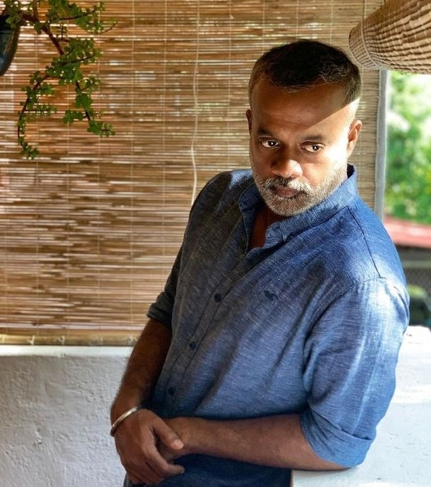

|  |
Gautham Vasudev Menon is an acclaimed Indian filmmaker and screenwriter known for his work in Tamil cinema, as well as in Telugu and Hindi films. Born on February 25, 1973, Menon gained prominence with his debut film Minnale (2001), and his distinctive storytelling style was further established with hits like Kaakha Kaakha, Vettaiyaadu Vilaiyaadu, and Vaaranam Aayiram. His films often explore themes of love, relationships, and police dramas, marked by strong character development and stylish direction. Menon has also ventured into producing and directing web series. His work is celebrated for blending commercial appeal with artistic depth. |